Artists styles
styles.RmdExplicación de cada estilo artístico (según IA) y previsualización de
todos los estilos utilizando la función
preview_styles():
style_da_vinci() - Leonardo da Vinci
Esta función genera gráficos inspirados en la maestría renacentista de Leonardo da Vinci, utilizando su característico claroscuro, el sfumato (transiciones suaves entre colores) y tonos terrosos y naturales. Prioriza la legibilidad y un aire de estudio profundo.
Inspiración General: Proporción, armonía y un realismo detallado.
Opciones de work_inspired_by:
“mona_lisa”: Tonos cálidos y marrones, con un foco en la sutiliza y el misterio.
“last_supper”: Paleta más sombría con grises piedra y toques de color para reflejar la solemnidad.
“vitruvian_man”: Colores más limpios y un fondo más claro, con énfasis en las formas y la estructura.
#> $`Da Vinci - Column - mona_lisa`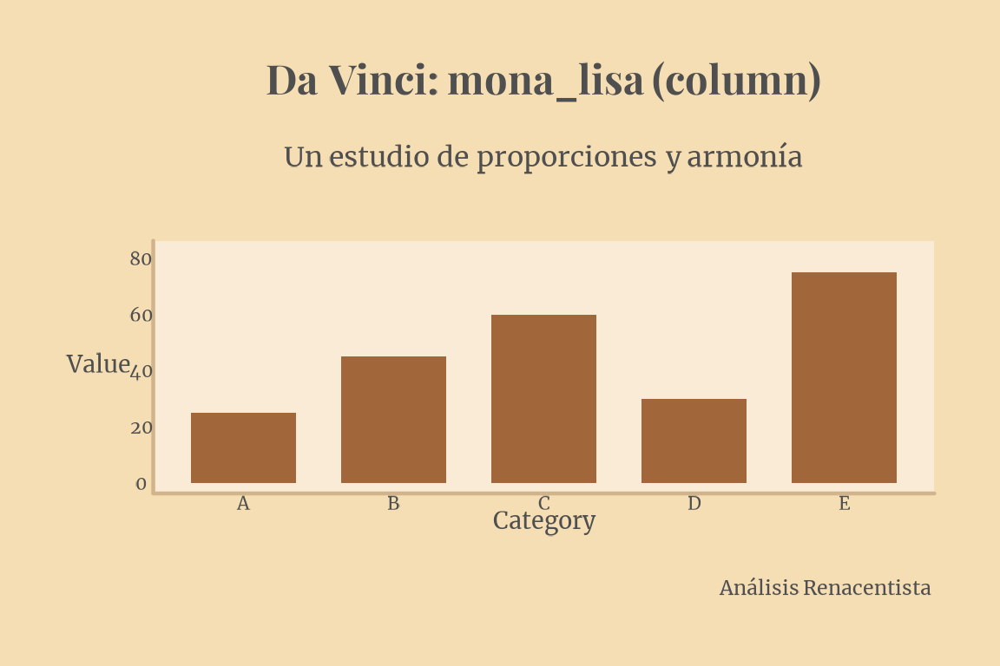
#>
#> $`Da Vinci - Line - last_supper`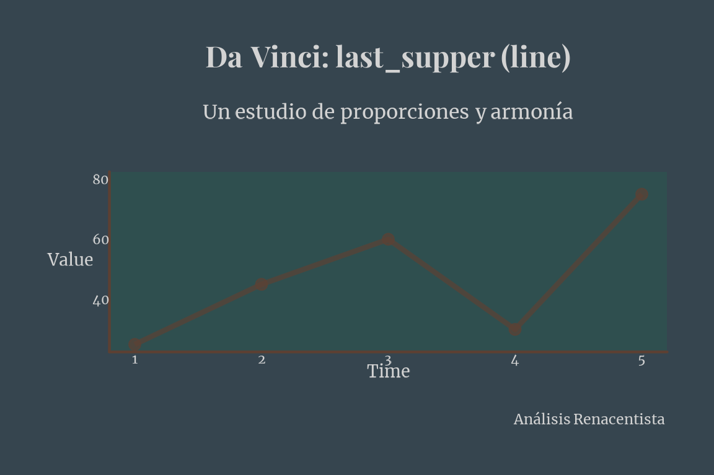
#>
#> $`Da Vinci - Scatter - vitruvian_man`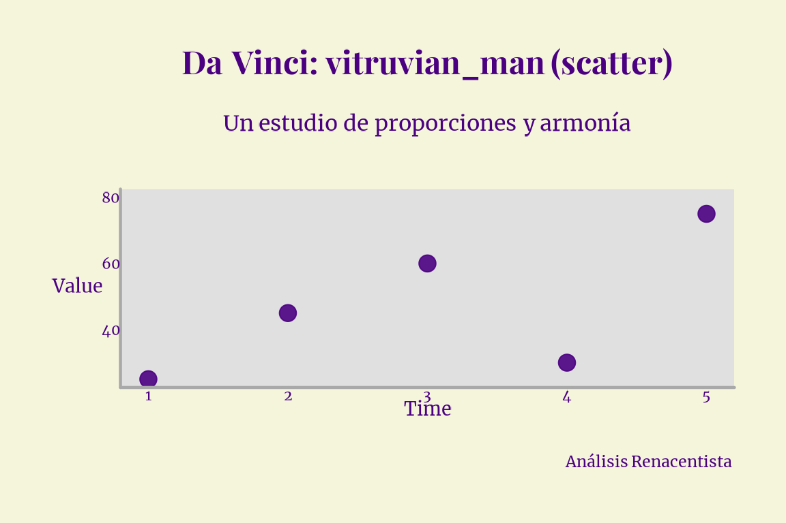
style_michelangelo() - Miguel Ángel
La función de Miguel Ángel captura la grandeza y fuerza del Alto Renacimiento, inspirándose en sus esculturas y frescos. El estilo se enfoca en la monumentalidad, los tonos marmóreos y el claroscuro dramático.
Inspiración General: Poder, volumen y una profunda sensación de presencia.
Opciones de work_inspired_by:
“david”: Predominio de blancos, grises y azules fríos, reflejando la pureza del mármol.
“sistine_chapel”: Tonos más intensos con rojos, dorados y azules profundos, inspirados en los frescos.
“pieta”: Enfocado en grises y platas con toques de azul-verde para la solemnidad y el dolor.
#> $`Michelangelo - Column - david`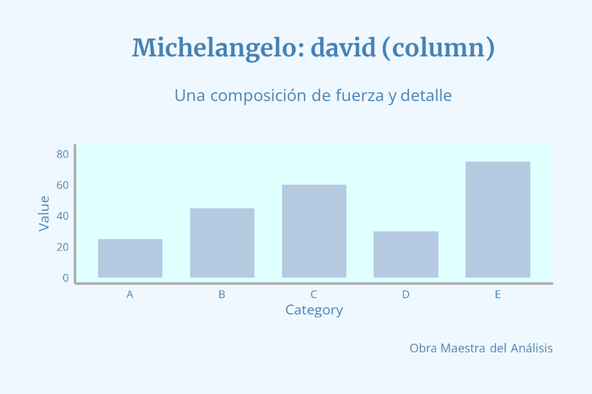
#>
#> $`Michelangelo - Line - sistine_chapel`#>
#> $`Michelangelo - Scatter - pieta`
style_rembrandt() - Rembrandt
El estilo Rembrandt se sumerge en el claroscuro barroco, donde la luz emerge dramáticamente de la oscuridad. La función enfatiza los tonos oscuros y terrosos, los dorados y la iluminación puntual.
Inspiración General: Profundidad, misterio y el juego entre luz y sombra.
Opciones de work_inspired_by:
“night_watch”: Marrones oscuros, dorados y toques de crema para la teatralidad y el movimiento.
“self_portrait”: Tonos sepia y marrones cálidos para la intimidad y el estudio de carácter.
“storm_sea”: Azules grises oscuros y blancos tormentosos para la dramaticidad y el movimiento.
#> $`Rembrandt - Column - night_watch`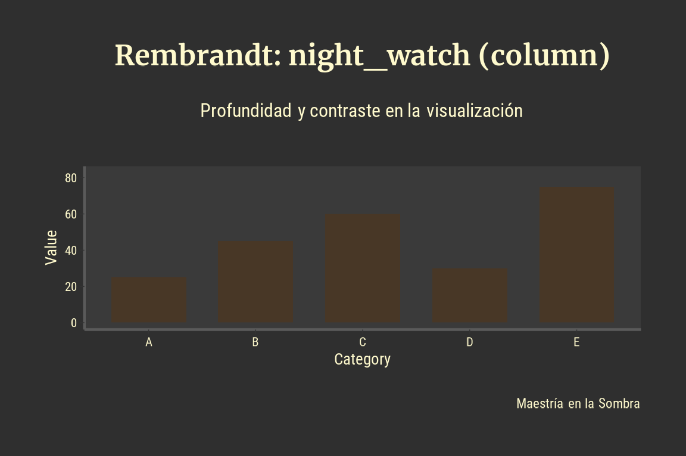
#>
#> $`Rembrandt - Line - self_portrait`#>
#> $`Rembrandt - Scatter - storm_sea`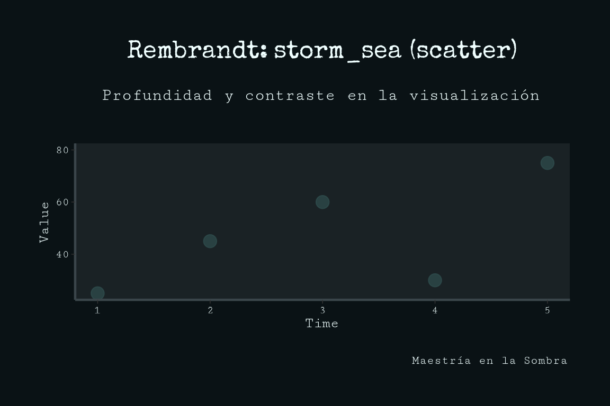
style_van_gogh() - Vincent van Gogh
Esta función evoca la pasión y el movimiento del post-impresionismo de Van Gogh, caracterizado por sus pinceladas audaces, colores vibrantes y la sensación de textura y energía.
Inspiración General: Emoción, movimiento y una percepción subjetiva de la realidad.
Opciones de work_inspired_by:
“starry_night”: Azules oscuros, amarillos brillantes, para una atmósfera nocturna y misteriosa.
“sunflowers”: Amarillos, naranjas y marrones intensos, transmitiendo calor y vitalidad.
“irises”: Morados, azules y verdes suaves, evocando la tranquilidad y la naturaleza.
#> $`Van Gogh - Column - starry_night`#>
#> $`Van Gogh - Line - sunflowers`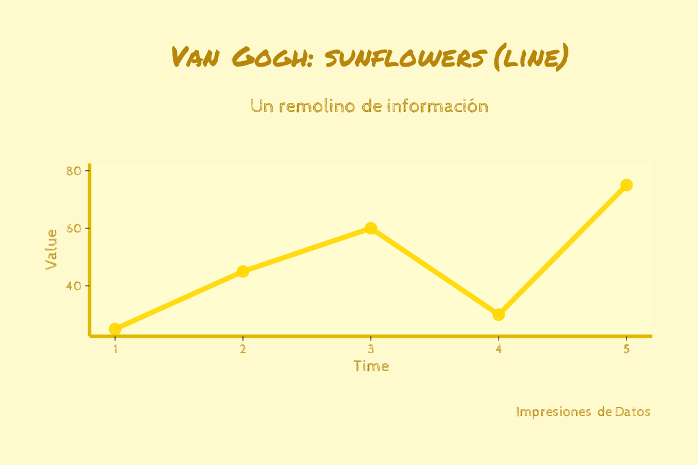
#>
#> $`Van Gogh - Scatter - irises`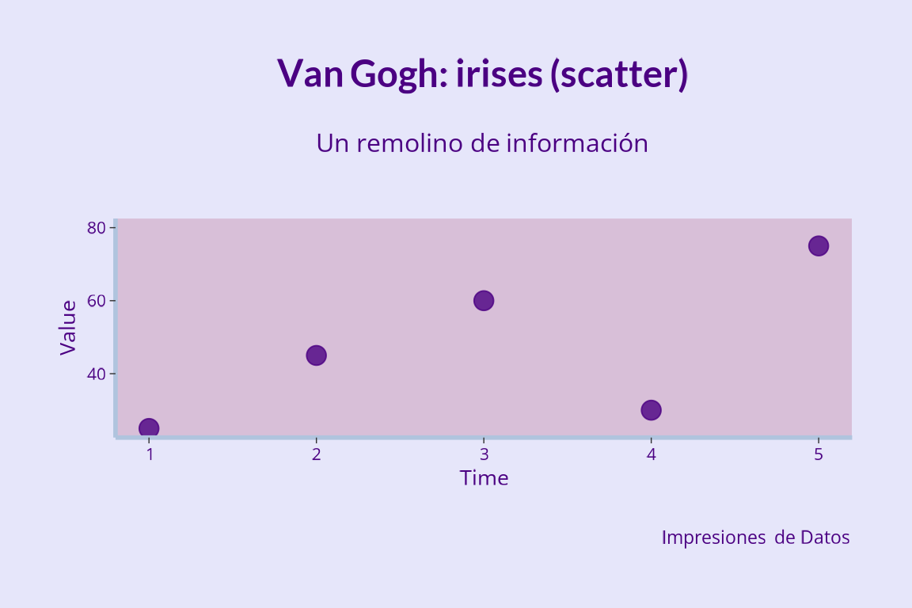
style_monet() - Claude Monet
Inspirada en el impresionismo de Claude Monet, esta función se centra en la captura de la luz, el color y la atmósfera en un momento dado. Se utilizan tonos suaves, difuminados y una sensación de efecto acuarela.
Inspiración General: Luz efímera, naturaleza, y la percepción cambiante.
Opciones de work_inspired_by:
“water_lilies”: Tonos acuáticos, verdes y azules suaves.
“impression_sunrise”: Naranjas, rosas y azules claros, para un efecto de amanecer.
“poppy_fields”: Rojos vibrantes (amapolas), azules cielo y verdes pradera.
#> $`Monet - Column - water_lilies`
#>
#> $`Monet - Line - impression_sunrise`#>
#> $`Monet - Scatter - poppy_fields`
style_banksy() - Banksy
La función Banksy canaliza el arte urbano y la crítica social de este enigmático artista. Se basa en el estilo stencil, el uso de blanco y negro con acentos de color llamativos, y una estética cruda y directa.
Inspiración General: Mensajes directos, impacto visual callejero, y una sensación de grabado.
Opciones de work_inspired_by:
“girl_with_balloon”: Blanco, negro y el icónico rojo del globo.
“flower_thrower”: Negro y blanco con el toque de colores primarios en las flores.
“rat_graffiti”: Predominio de blanco y negro, con acentos de naranja o rojo fuerte.
#> $`Banksy - Column - girl_with_balloon`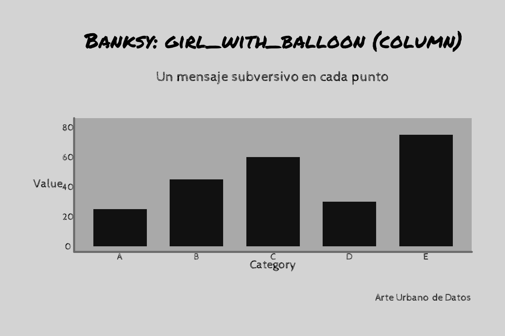
#>
#> $`Banksy - Line - flower_thrower`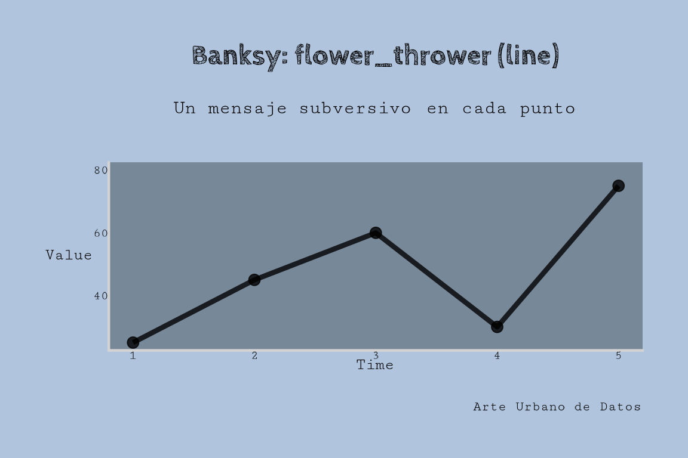
#>
#> $`Banksy - Scatter - rat_graffiti`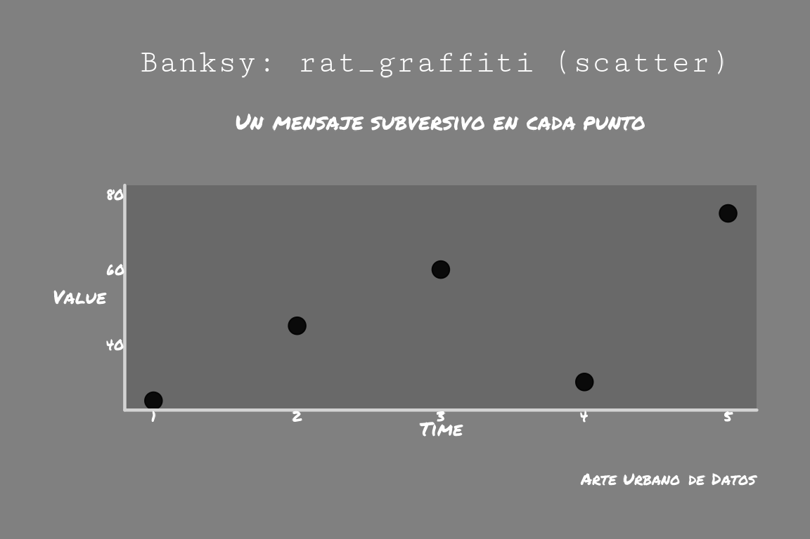
style_dali() - Salvador Dalí
Esta función sumerge tus datos en el surrealismo onírico de Dalí, caracterizado por formas distorsionadas, elementos simbólicos, y contrastes de color inesperados.
Inspiración General: Sueños, subconsciente, y una realidad maleable.
Opciones de work_inspired_by:
“persistence_memory”: Marrones, ocres y azules desérticos.
“elephants”: Morados profundos, rojos, y grises para una atmósfera dramática.
“swans_reflecting_elephants”: Verdes, azules y dorados, explorando la dualidad y los reflejos.
#> $`Dali - Column - persistence_memory`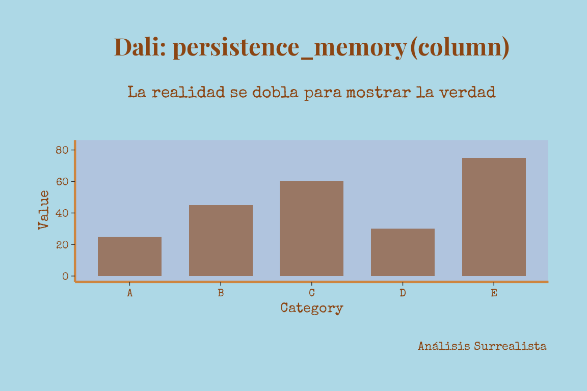
#>
#> $`Dali - Line - elephants`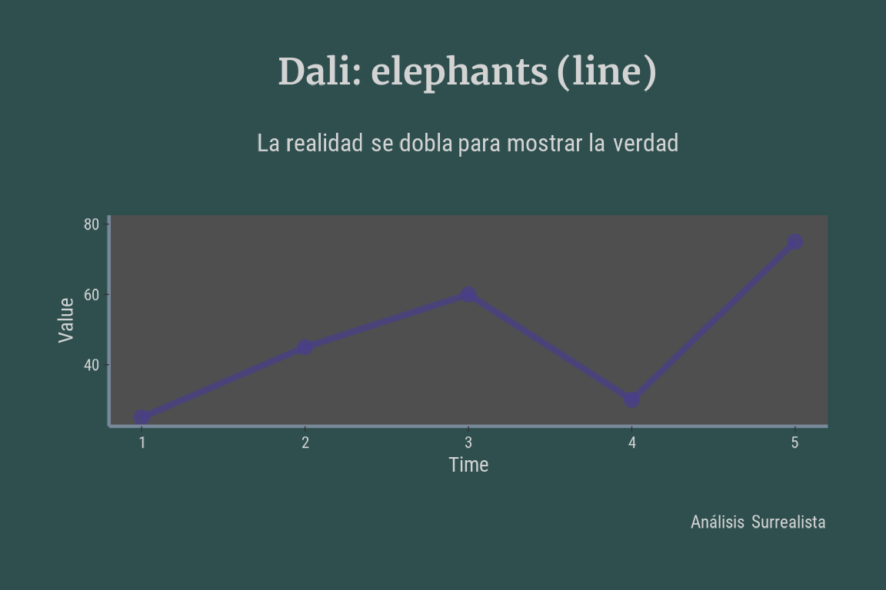
#>
#> $`Dali - Scatter - swans_reflecting_elephants`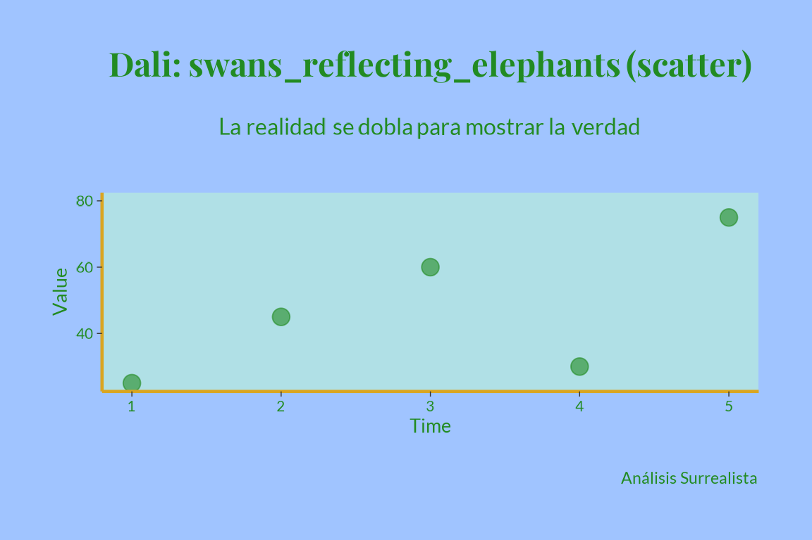
style_miro() - Joan Miró
La función de Miró busca transmitir la libertad y la espontaneidad del surrealismo abstracto. Se caracteriza por formas orgánicas y geométricas simples, colores primarios y vibrantes, y líneas negras distintivas.
Inspiración General: Simbolismo lúdico, biomorfismo y un sentido de universo personal.
Opciones de work_inspired_by:
“the_farm”: Tonos tierra con estallidos de colores primarios para un ambiente rústico y simbólico.
“constellations”: Negro profundo para el fondo con puntos y líneas brillantes en colores primarios sobre él.
“blue_series”: Predominio de azules, con elementos negros para el contraste y la estructura.
#> $`Miro - Column - the_farm`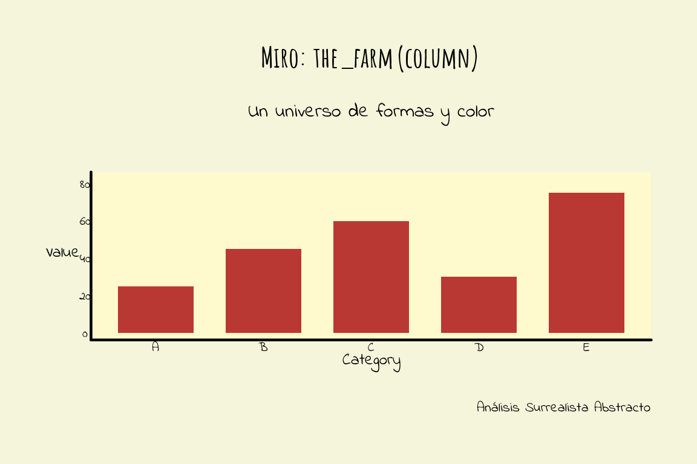
#>
#> $`Miro - Line - constellations`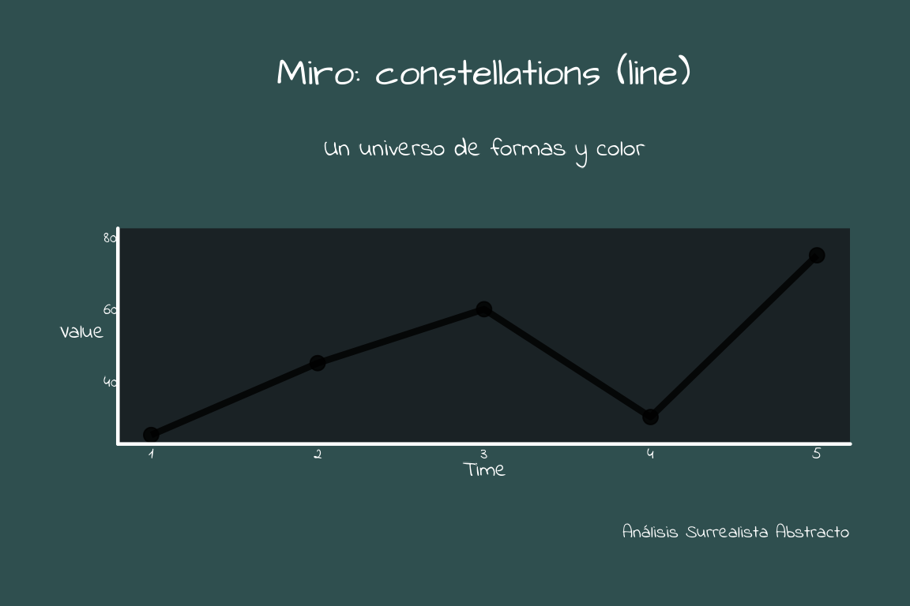
#>
#> $`Miro - Scatter - blue_series`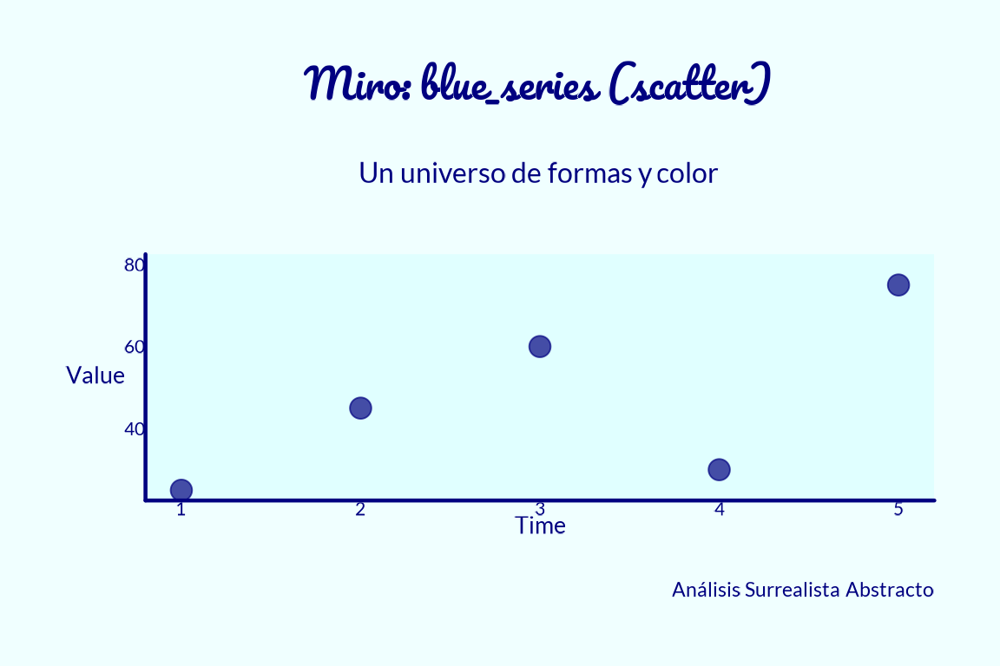
style_gentileschi() - Artemisia Gentileschi
Esta función rinde homenaje a la maestra barroca Artemisia Gentileschi, conocida por su claroscuro intenso, colores ricos y profundos, y la representación de figuras femeninas poderosas y dramáticas.
Inspiración General: Dramatismo, realismo psicológico y la fuerza de la luz en la oscuridad.
Opciones de work_inspired_by:
“judith_beheading_holofernes”: Rojos sangre, marrones oscuros y negros para una atmósfera intensa y violenta.
“mary_magdalene”: Morados profundos, grises y tonos piel para una representación introspectiva.
“self_portrait_lute_player”: Marrones cálidos, ocres y cremas, con un enfoque en la expresión y la luz sobre la piel.
#> $`Gentileschi - Column - judith_beheading_holofernes`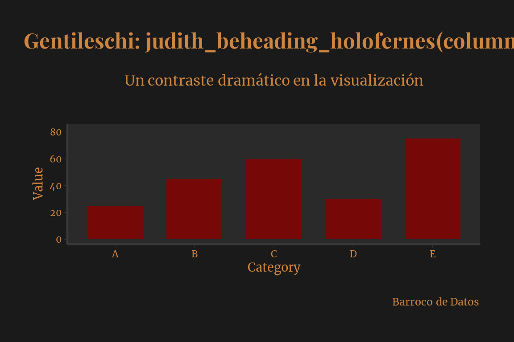
#>
#> $`Gentileschi - Line - mary_magdalene`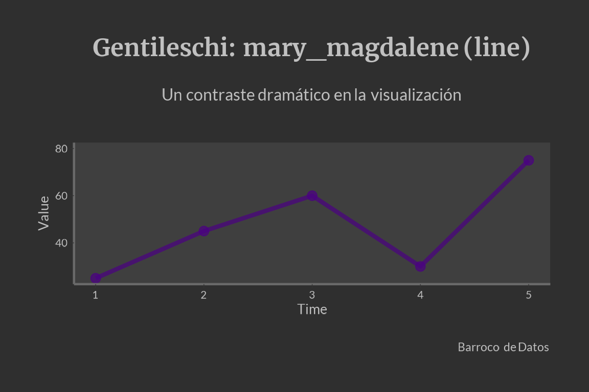
#>
#> $`Gentileschi - Scatter - self_portrait_lute_player`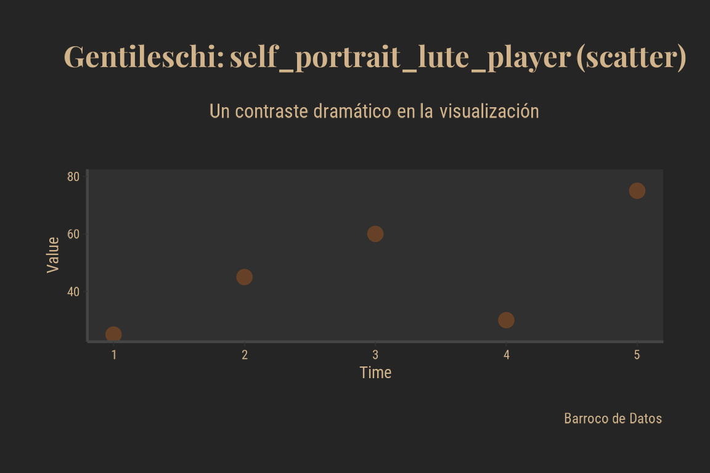
style_kandinsky() - Wassily Kandinsky
La función de Kandinsky abraza el expresionismo abstracto y el arte no figurativo. Se caracteriza por la explosión de colores vibrantes, formas geométricas y orgánicas en composiciones dinámicas, y una sensación de sinestesia (relación entre sonido y color).
Inspiración General: Armonía espiritual, expresión emocional a través del color y la forma.
Opciones de work_inspired_by:
“composition_viii”: Predominio de formas geométricas con colores primarios y negros.
“yellow_red_blue”: Un enfoque directo en los tres colores fundamentales, con líneas negras marcadas.
“on_white_ii”: Mayor uso del blanco y tonos claros, con formas de colores más sutiles que flotan en el espacio.
#> $`Kandinsky - Column - composition_viii`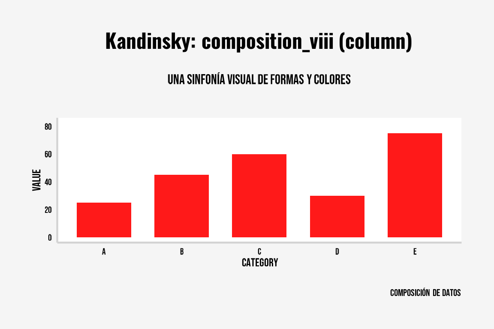
#>
#> $`Kandinsky - Line - yellow_red_blue`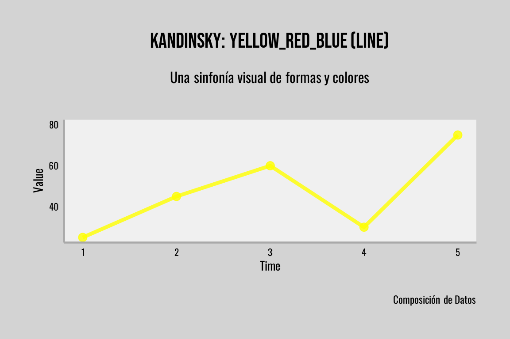
#>
#> $`Kandinsky - Scatter - on_white_ii`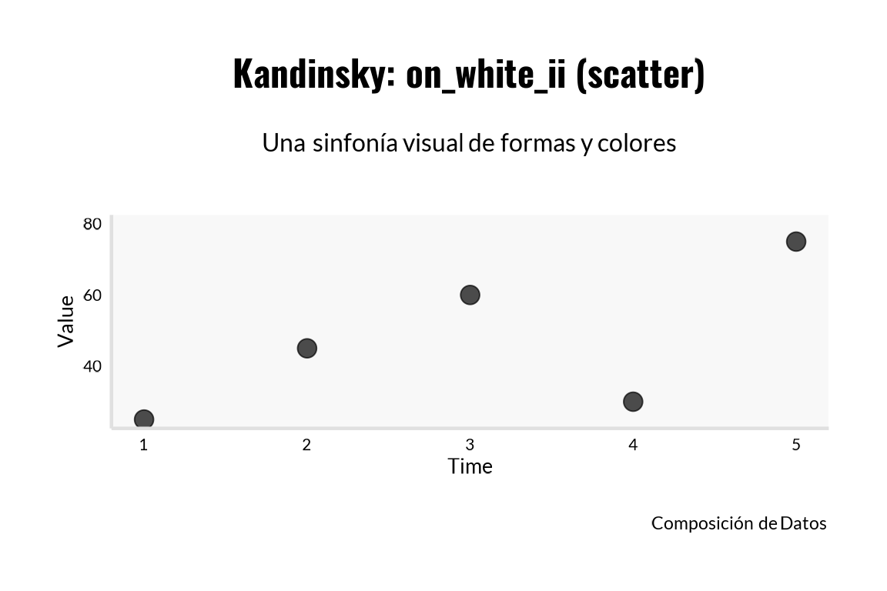
style_warhol() - Andy Warhol
Esta función sumerge los datos en el vibrante mundo del Pop Art de Andy Warhol. Se caracteriza por colores planos y contrastantes, la repetición de imágenes icónicas y una estética que celebra la cultura de consumo masivo.
Inspiración General: Fama, consumo, y la estetización de lo cotidiano.
Opciones de work_inspired_by:
“soup_cans”: Rojo, blanco y negro, con toques de amarillo.
“marilyn_monroe”: Tonos de fucsia, cian, amarillo, con fuerte contraste.
“cow_wallpaper”: Verdes ácidos y negros, evocando la repetición de patrones.
#> $`Warhol - Column - soup_cans`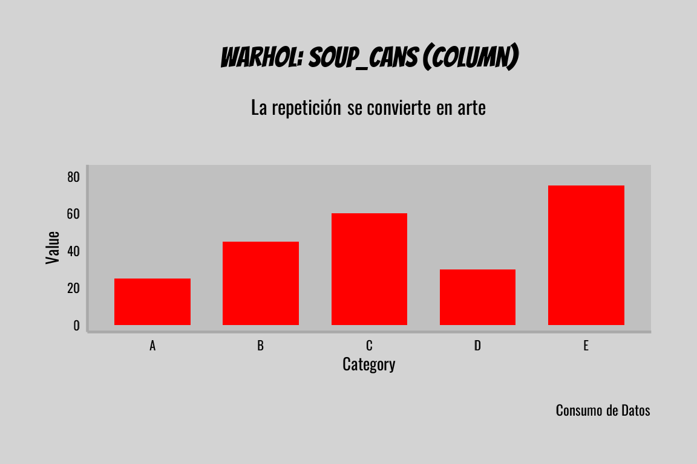
#>
#> $`Warhol - Line - marilyn_monroe`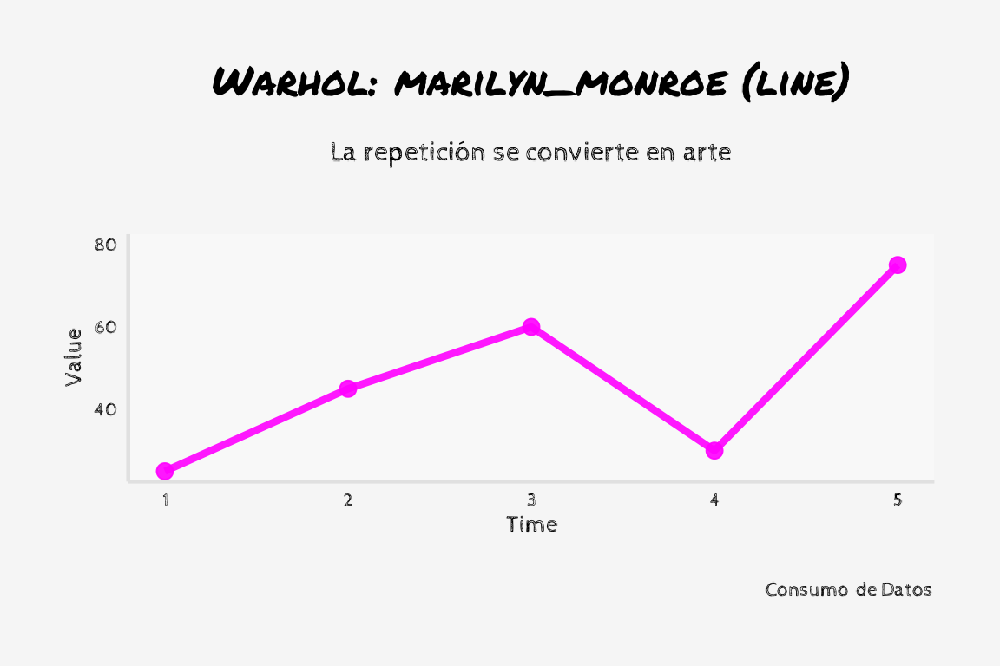
#>
#> $`Warhol - Scatter - cow_wallpaper`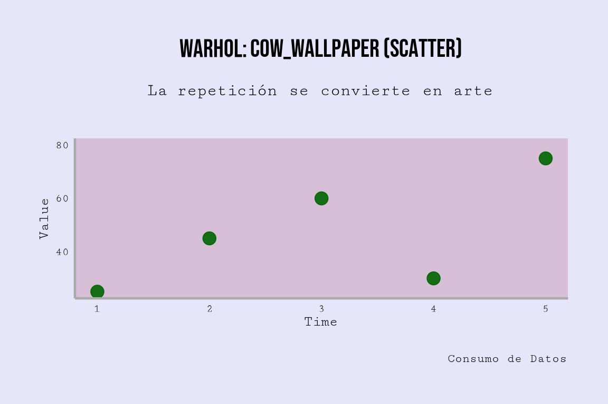